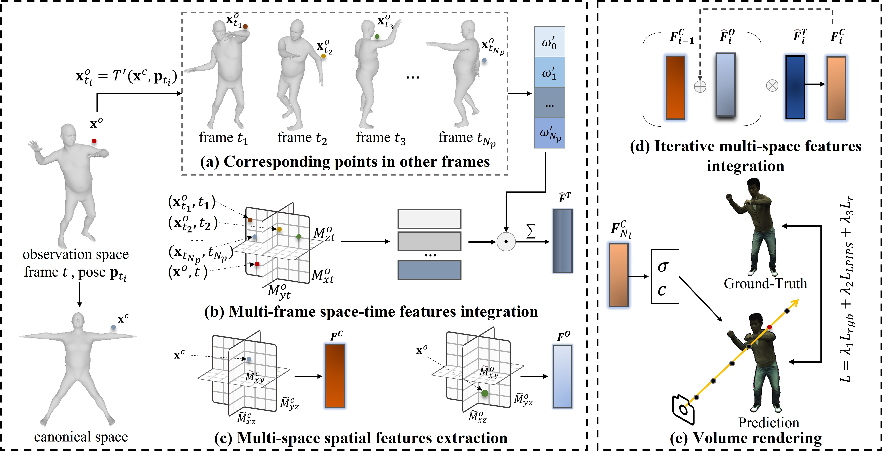
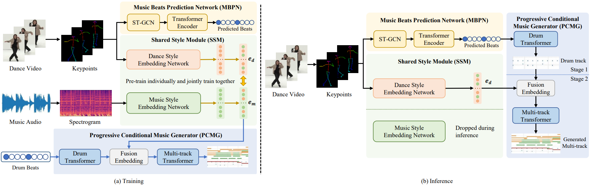
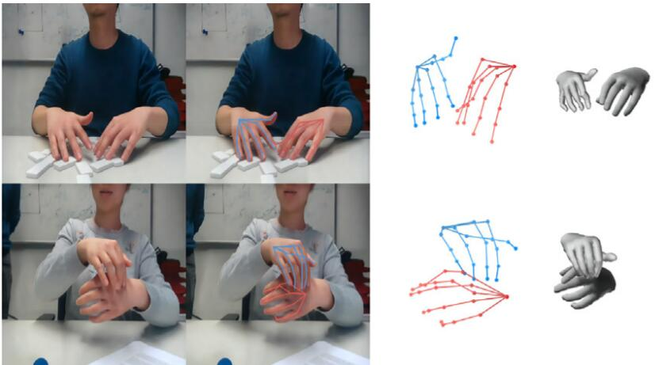

|
Wensheng Li(李文盛) I am currently working toward the Ph.D. degree with School of Computer Science and Engineering, Sun Yat-sen University, supervised by Prof. Chengying Gao and Prof. Ning Liu in Intelligent and Multimedia Science Laboratory. I received the B.S. and M.S. degree in computer science and technology from Sun Yat-sen University, Guangzhou, China, in 2018 and 2021, respectively. I'm interested in computer vision and computer graphics, with a particular focus on human pose estimation, human body reconstruction, and neural rendering. |
{kind=link}
Education |
|
|
|
Publications |

|
Feature Replacement in Gaussian Splatting for 3D Stylization
Jinkeng Zhu, Wensheng Li, Chengying Gao*, Computer Graphics International (CGI, 2025) [pdf] We introduce a feature replacement module that utilizes reversible network to decouple content and style features, ensuring the effective substitution of style information while preserving scene content. |
|

|
Efficient Integration of Neural Representations for Dynamic Humans
Wensheng Li, Lingzhe Zeng, Chengying Gao, Ning Liu* IEEE Transactions on Visualization and Computer Graphics (TVCG, 2024) [pdf] We present a novel approach for efficiently modeling dynamic humans and achieving realistic renderings by integrating neural human representations. |
|

|
DanceComposer: Dance-to-Music Generation Using a Progressive Conditional Music Generator
Xiao Liang, Wensheng Li, Lifeng Huang, Chengying Gao* IEEE Transactions on Multimedia (TMM, 2024) [pdf] We propose DanceComposer, a framework for the automatic generation of appropriate music from dance videos. |
|

|
3D interacting hand pose and shape estimation from a single RGB image
Chengying Gao*, Yujia Yang, Wensheng Li, Neurocomputing, 2022 [pdf] In this paper, we tackle the shape and pose estimation task of interacting hands from a single RGB image and outperform other methods by a large margin on the InterHand2.6M dataset. |
|
Page inspired by Jon Barron. |